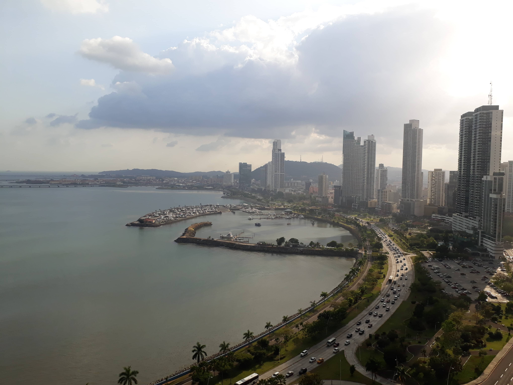
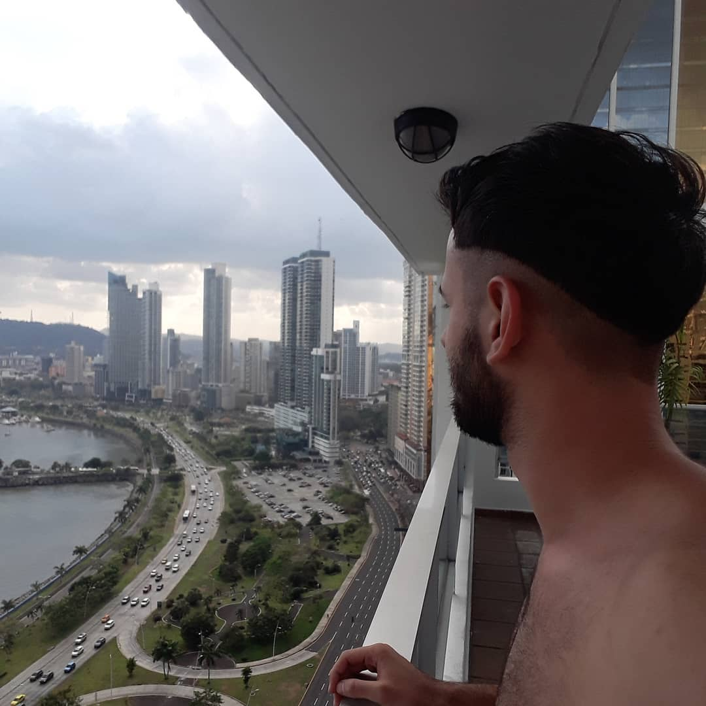

Era septiembre de 2017 y después de unos meses moviditos a nivel personal, acababa de reservar mi vuelo a Río de Janeiro, y una de las primeras cosas que hice fue llamar a mi madre. Esa conversación no me la voy a olvidar más. Feliz por el viaje que iba a emprender, le empecé a contar todo: "Mami, me voy a Brasil, solo... se que es medio loco, pero tengo la necesidad de irme so..." Ella me paró y me dijo: "También te tengo que contar algo, yo también me voy, viste esto que te había contado de Panamá... bueno, me salió, me voy a trabajar, son al menos dos años". Atónito, la felicité, aunque por adentro tenía un sentimiento extrañísimo. Desde ahí, que me propuse que en mi próximo viaje tenía que ir a visitarla. Así que 5 meses después estaba desembarcando en el aeropuerto Internacional de Tocumen, en la Ciudad de Panamá y mi madre me estaba esperando allá.
La hermosísima Ciudad de Panamá.
Comenzaba así un viaje atípico, distinto a todos los que había vivido, había viajado solo, con amigos, en pareja, pero llegar un lugar totalmente nuevo para reencontrarme con mi madre me daba mucha ilusión.
Como ya deben saber mi pasión son las playas y la mala noticia es que las de Panamá Ciudad no están aptas para bañarse debido a la contaminación que tras décadas ha realizado el hombre. El concepto de Panamá Ciudad no tiene que ver con las playas, tiene que ver con un estilo de vida: ¡Bienvenidos a Centroamérica! Clima tropical los 365 días del año, música las 24hs del día, una gastronómica exquisita y una gran oferta nocturna para los amantes de las discos y los bares con mucha onda. También, Panamá es una meca capitalista. Sí, tenemos absolutamente todas las marcas premium que no se consiguen en Argentina, Tommy Hilfiger, Dior, Calvin Klein, Guess, entre otras muchas. Además, de una gigantesca gamas de autos de lujos a precio reducido por el bajo impuesto que tiene la industria automotriz, haciendo que no sea nada loco encontrarnos unas cuantas Ferraris estacionadas cerca de la Av. Balboa.
Además de está hermosísima ciudad, Panamá cuenta con lugares de playa increíbles como Portobelo, Isla Contadora o la espectacular Guna Yala (San Blas) que tiene un agua tan cristalina que parece de ensueño. ¡Pero eso se los contaré en otros escritos!
Vista desde el área de piscina del Bayfront Towers, Panamá Ciudad.
Canal de Panamá: "El imperdible" que es perdible. Llegar desde la terminal de buses de Albrook es muy fácil ya que hay un colectivo que nos deja directamente en la entrada al Canal y cuesta solamente centavos de dólar. En marzo de 2018 la entrada al Canal estaba 20 dólares (sí, bastante caro) y contaba con el ingreso al museo, la posibilidad de ver un cortometraje de 10 minutos (se proyecta cada media hora y va rotando de inglés a español) y el acceso a la terraza superior desde donde se ve la llegada de los barcos. La historia del Canal es increíble debido a la importancia que este tuvo y tiene en la historia del comercio de América, además de que perteneció 100 años a Estados Unidos que lo compró por una suma que rondaba a los 10 millones de dólares. ¡Una locura! Un país, dentro de otro país. Sin embargo, el 31 de Diciembre de 1999 el acuerdo de los 100 años finalizó y el Canal volvió a ser de Panamá. Pero sinceramente, no hay nada más que esto, el museo no dice mucho y las vistas desde la terraza quedan opacadas por la multitud de personas que se abarrotan para ver un pedacito de barco de carga mientras por parlantes se anuncia el cargamento que estos traen. ¡Uff, algo re divertido!
Si quieren viajar en el tiempo y sentirse inmersos en una Panamá colonial, el Casco Viejo es el lugar ideal. Se puede disfrutar muy bien de día caminando por sus callecitas de piedra, parándose a almorzar o a merendar, pero sinceramente yo lo disfruté mucho más de noche. Cuando el sol se esconde y las luces de los bares se encienden comienza otra Panamá. Abajo les cuento como fue mi noche maratónica allí.
Una de las cosas que más me llamó la atención es que todo lo que vi de Panamá es coqueto, lindo, llamativo, desde la hermosa Av. Balboa con sus comercios y sus autos de lujo hasta la vía costera ideal para salir a correr o andar en bicicleta por las mañanas. La misma se extiende desde Punta Paitilla hasta el área del Marañon.
Había leído que Panamá Ciudad tiene uno de los Hard Rock Café más lindos del mundo, así que con mi madre decidimos ir a conocerlo. Se puede cenar exquisito en su restaurante, pero lo que más recomiendo es quedarse a bailar y a beber unas copas en el bar de la terraza que sin lugar a dudas ofrece una de las mejores vistas de todo Panamá, acompañada de mucho reggaeton, claro.
En la noche de "Tántalo" con la leyenda del boxeo panameño el "Mano de piedra" Durán.
¿Te gustan los ritmos latinos? ¿Querés reggaeton a toda hora? Entonces prepárate para una de las mejores noches de tu vida.
Llegue un Jueves a Panamá y ese mismo día, después de comer con mi madre y tomarme unos mojitos deliciosos, me decidí por incursionar en la noche panameña de la cual había leído muchísimo. Tras investigar y consultar a locales, decidí dirigirme directamente al Casco Viejo. Al llegar, me sentí un poco raro, era totalmente visitante, estaba solo y aún no sabía donde ir. Desde donde me dejó el taxi camine unos pasos y le pregunte a un policía, sí, justo a un policía, donde podía divertirme. Para mi sorpresa, el policía sabía bastante de la movida nocturna jajaja y me recomendó ir a Tántalo bar , un hotel que abre su terraza para hacerla disco todos los días de la semana. Las vistas son increíbles, los tragos riquísimos (aunque algo caros, entre los 10 y 20 dólares) y la música... ¡Cien por ciento latina!
Era la primera vez que estaba solo en una disco y por más que intentaba disimular me sentía incómodo. Pero me acordé de mi viaje a Brasil y de que, cuando me siento extraño en los contextos sociales, es cuando mejor me desenvuelvo. Así fue que entre un trago y el otro me encontraba hablando con un chico panameño que tenía una amigo chileno y con dos chicas holandesas.
La noche era perfecta, pero el problema en el valor de los tragos. Y sí, ¡Soy bastante borracho! Fue así que el chico panameño nos dijó que conocía un lugar muy cerquita donde vendían tragos muy baratos y después de hablar con el de la puerta de Tántalo para poder reingresar más tarde fuimos a "Relic Bar" (actualmente cerrado). El ingreso es un poco extraño, es un pasillo largo con una escalera al fondo que al bajarla da a un patio abierto y un bar techado. La música de la mejor también, mucho reggaeton y las bebidas mucho más económicas, alrededor de unos 5 dólares los tragos. Charlamos y nos bebimos bastante, así que fue la hora de volver a Tántalo y seguir disfrutando.
Era alrededor de la 1:30 de la mañana y estábamos nuevamente por ingresar a Tántalo cuando vimos que por la puerta, detrás de nosotros, entraba él, la leyenda del deporte panameño, el ex-boxeador "Mano de Piedra" Durán. Para los que no lo conocen, es como una especie de Maradona del boxeo. Tras una fotito rápida con el crack, subimos a la terrazita y seguimos bailando. Pero... esto no termina ahí.
El bar estaba cerrando y yo todavía seguía con ganas de más (acá en Buenos Aires, la joda sigue hasta las 7 u 8 de la mañana). Fue así que decidí seguir otros de los consejos y me dirigí a la calle Uruguay esquina Av. Balboa, que cuenta con un sinfín de restaurantes para cenar y beber algo y también con "AltaBar" , una disco que suele cerrar un poco más tarde que los demás lugares (ese jueves cerró a las 3 mas o menos), donde la entrada me salió gratis y tras comprarme un vodka con jugo me dedique a seguir bailando hasta que mis pies no dieron más.
En resumidas cuentas: ¡Fue una noche increíble! Y si les gusta el lujo, lo coqueto, tener disponible un sinfín de marcas de renombre, el reggaeton y bailar, definitivamente Panamá Ciudad tiene que formar parte de su próximo viaje.